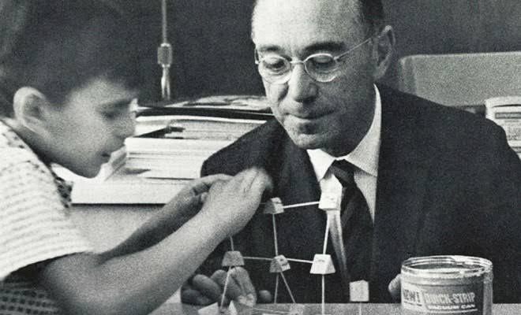
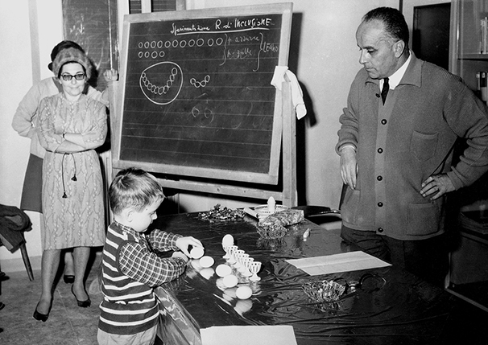
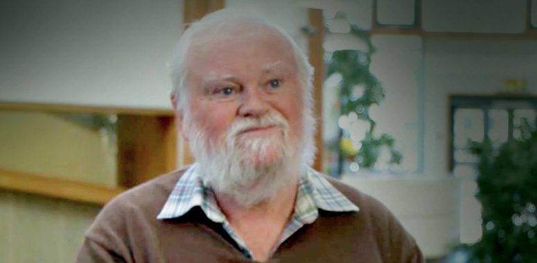

The Architect of Growth
For the parent who wonders, "How much should I help, and when should I step back?"
You watch your daughter struggle with a puzzle, her brow furrowed. Part of you wants to take over and show her. But you pause, remembering Jerome Bruner's gentle wisdom.
Bruner saw you not as a teacher delivering facts, but as a scaffold — the temporary framework surrounding a building under construction. Your role isn't to build the building. It's to provide just enough support so the building can rise on its own.
Picture it this way: Your daughter tries a piece. It doesn't fit. Instead of placing it correctly for her, you say, "What do you notice about this piece compared to the space?" You're holding the structure steady while she does the work. Then, when she succeeds, you let that level of scaffolding fall away, moving to the next challenge.
Bruner's insight was that learning is collaborative, a dance between guide and learner. The parent or teacher doesn't do the learning for the child — but without their strategic support at the right moments, the child can't reach the next level. You're there to catch missteps, offer encouragement, and gently push toward new risks.
The most beautiful part? Your scaffolding is alive — it rises with your child, becomes less visible as they grow stronger, and can always be rebuilt when new challenges arise. One day, your daughter won't need you for that puzzle anymore. But she'll know how to scaffold herself — because you showed her what support feels like.

The Village of Wonder
For the parent who asks, "How can I truly know what my child is learning, and where do I fit in?"
Imagine a preschool rising from the rubble of World War II, built literally by parents with their own hands — because they believed their children's futures mattered more than the destruction around them.
That's how Reggio Emilia began. And from that origin grew a profound truth: parents are not visitors to their children's education — they are partners at the very centre.
In Reggio-inspired schools, the classroom hums with what educators call "documentation" — teachers carefully observe, photograph, and write about children's words and discoveries. But this isn't just record-keeping. It's a mirror held up to parents, inviting them to see their child's thinking and to share their own observations from home.
You might look at photos of your child building with blocks and suddenly understand that they're exploring balance and gravity. Or you might notice patterns in their play that even the teacher missed. Through documentation, you become a co-researcher, learning alongside teachers about who your child is and how they think.
Reggio Emilia tells you that your voice matters at every level — not just at home, but in school governance, curriculum decisions, and community life. You are not receiving an education programme; you are helping to shape one.

The Laboratory of Play
For the parent who worries, "Shouldn't they be learning something 'real' instead of just playing?"
You watch your children build a castle with sofa cushions, pretending to be knights. A small part of you wonders if they should be practising letters instead.
Dr David Whitebread would smile knowingly and invite you to look closer.
For decades, Whitebread has studied what children are actually doing during play — and the findings are extraordinary. When children pretend, negotiate roles, and create worlds, they are developing what he calls metacognition — thinking about their own thinking. They plan, strategise, troubleshoot, and reflect. These are the very skills that underpin academic success later on.
In one classic study, children who experienced a "play" condition before a problem-solving task performed better than those who had direct instruction. Play prepared their minds for effort, creativity, and self-regulation.
But here's Whitebread's gift to you as a parent: the most powerful play is often child-initiated and without adult interference. That doesn't mean you disappear — it means you trust the process. Your role is to provide rich materials, safe environments, and the time and space for play to unfold.
Whitebread also shows that when you join your child in play — following their lead, not directing it — you're building more than fun memories. You're laying the neurological and emotional groundwork for their self-control and strategic thinking.

A Shared Foundation
For the parent who sees the bigger picture.
Standing apart, these three thinkers seem to offer different gifts: the scaffold, the village, the playground.
But step back, and you'll see they were all describing the same beautiful truth.
Jerome Bruner showed that learning is relational. It happens in the space between guide and learner. He gave you the language to understand your role as a temporary support, fading as confidence grows.
The educators of Reggio Emilia showed that learning is communal. It doesn't happen in isolation — it requires parents, teachers, and children in a circle of shared observation and wonder. They gave you the tools to be a partner, not a customer.
David Whitebread showed that learning is active and self-directed. Children are not empty vessels waiting to be filled — they are scientists, artists, and architects of their own understanding. Play is their primary method, and your trust is their fuel.
It says: you are the scaffold that holds up your child's building, but you are also part of a village where everyone — teachers, family, community — shares in the work. And at the centre of it all is a child, playing, questioning, constructing meaning with their whole being.
These three visions overlap in one profound message: children learn best when they are guided but free, observed but trusted, challenged but safe. And parents are not just enablers of this magic — they are essential to it.
You don't have to choose between being a teacher, a partner, or a playmate. You get to be all three. And so does your child.